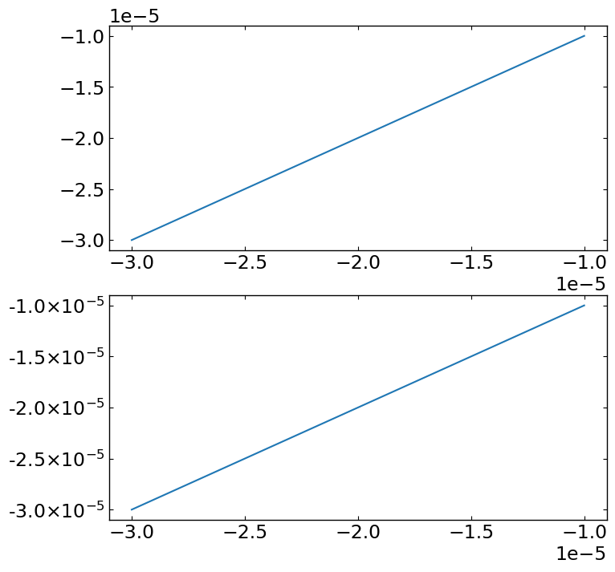

pyds.tools¶
pyds.tools.readcol¶
read the columns with formats from ascii data
[1]:
"""
Let's prepare the mock ascii data. Once you generate it, we can simply check it like this
"""
#import os
# locate of sample data
#fdir = os.environ['PYTHONDATA']
fdir = './example_data/'
fname = fdir+'test_usr'
testf = open(fname,'r')
text = testf.readlines(); testf.close()
for itext in text:
print(itext)
[2]:
""" read columns of interest
format: i,f,s,x for integer,float,string and dummy(i.e. no-read), respectively
Note that 'NAN' is only readable in 'float' type.
If 'NAN' is read as 'integer' type, it would produce weird large number.
(This is not bug, but just the intrinsic treatment of the python until now.)
"""
#import os
from pyds.tools import readcol
#fdir = os.environ['PYTHONDATA']
fdir = './example_data/'
fname = fdir+'test_usr'
a,b,c = readcol(fname,format=['i','x','x','f','s'],nskip=1)
print(a,b,c)
pyds.tools.axpos¶
set the multiplots in a more intutive and easy way.
[3]:
""" First method of drawing multiplots:
this can be used any number of size elements (i.e. pltxs=[...],pltys=[...])
- Using
>>> axset = axpos(...)
>>> plt.figure(...)
>>> ax = plt.axes(axset.pos(...))
"""
import matplotlib.pyplot as plt
import numpy as np
from pyds.tools import axpos
%matplotlib inline
bbox_props = dict(boxstyle="round", fc="w", ec="0.5", alpha=0.9)
xlim = [0,100]
ylim = [0,90000]
x = np.linspace(0,100,5000)
y1 = x**2/2.
y2 = x**2
y3 = x**2*5
y4 = x**2*10
# initialize the configuration
axset = axpos(22,pltx0=[30,10],plty0=[20,10],pltxs=[100,50],pltys=[100,50],pltxw=0,pltyw=3)
# axes positions
# [ 1,1 1,2
# 2,1 2,2 ]
# generate figure
plt.figure(figsize=(9,9*axset.winys/axset.winxs))
# first plot
ax1 = plt.axes(axset.pos(221))
ax1.plot(x,y1)
ax1.set_xlim(xlim[0], xlim[1])
ax1.set_ylim(ylim[0], ylim[1])
ax1.annotate('1st plot',(0.05,0.9),xycoords='axes fraction',ha="left",bbox=bbox_props)
plt.setp(ax1.get_xticklabels(), visible=False)
# second plot
ax2 = plt.axes(axset.pos(222))
ax2.plot(x,y2)
ax2.set_xlim(xlim[0], xlim[1])
ax2.set_ylim(ylim[0], ylim[1])
ax2.annotate('2nd plot',(0.1,0.9),xycoords='axes fraction',ha="left",bbox=bbox_props)
plt.setp(ax2.get_xticklabels(), visible=False)
plt.setp(ax2.get_yticklabels(), visible=False)
# third plot
ax3 = plt.axes(axset.pos(223))
ax3.plot(x,y3)
ax3.set_xlim(xlim[0], xlim[1])
ax3.set_ylim(ylim[0], ylim[1])
ax3.annotate('3rd plot',(0.05,0.8),xycoords='axes fraction',ha="left",bbox=bbox_props)
# forth plot
ax4 = plt.axes(axset.pos(224))
ax4.plot(x,y4)
ax4.set_xlim(xlim[0], xlim[1])
ax4.set_ylim(ylim[0], ylim[1])
ax4.annotate('4th plot',(0.1,0.8),xycoords='axes fraction',ha="left",bbox=bbox_props)
plt.setp(ax4.get_yticklabels(), visible=False)
# set the figure label
plt.annotate('yaxis label',(0.01,0.6),xycoords='figure fraction',rotation='vertical')
plt.annotate('xaxis label',(0.49,0.02),xycoords='figure fraction')
[3]:
Text(0.49, 0.02, 'xaxis label')
[4]:
""" Even drawing part of plots is possible """
import matplotlib.pyplot as plt
import numpy as np
from pyds.tools import axpos
%matplotlib inline
bbox_props = dict(boxstyle="round", fc="w", ec="0.5", alpha=0.9)
xlim = [0,100]
ylim = [0,90000]
x = np.linspace(0,100,5000)
y1 = x**2/2.
y2 = x**2
y3 = x**2*5
y4 = x**2*10
# initialize the configuration
axset = axpos(22,pltx0=[30,10],plty0=[20,10],pltxs=[100,50],pltys=[100,50],pltxw=0,pltyw=3)
# axes positions
# [ 1,1 1,2
# 2,1 2,2 ]
# generate figure
plt.figure(figsize=(9,9*axset.winys/axset.winxs))
# first plot
ax1 = plt.axes(axset.pos(221))
ax1.plot(x,y1)
ax1.set_xlim(xlim[0], xlim[1])
ax1.set_ylim(ylim[0], ylim[1])
ax1.annotate('1st plot',(0.05,0.9),xycoords='axes fraction',ha="left",bbox=bbox_props)
plt.setp(ax1.get_xticklabels(), visible=False)
# second plot
ax2 = plt.axes(axset.pos(222))
ax2.plot(x,y2)
ax2.set_xlim(xlim[0], xlim[1])
ax2.set_ylim(ylim[0], ylim[1])
ax2.annotate('2nd plot',(0.1,0.9),xycoords='axes fraction',ha="left",bbox=bbox_props)
plt.setp(ax2.get_xticklabels(), visible=False)
plt.setp(ax2.get_yticklabels(), visible=False)
# third plot
ax3 = plt.axes(axset.pos(223))
ax3.plot(x,y3)
ax3.set_xlim(xlim[0], xlim[1])
ax3.set_ylim(ylim[0], ylim[1])
ax3.annotate('3rd plot',(0.05,0.8),xycoords='axes fraction',ha="left",bbox=bbox_props)
# set the figure label
plt.annotate('yaxis label',(0.01,0.6),xycoords='figure fraction',rotation='vertical')
plt.annotate('xaxis label',(0.49,0.02),xycoords='figure fraction')
[4]:
Text(0.49, 0.02, 'xaxis label')

[5]:
""" Second method of drawing multiplots:
All plosts should be in same size (i.e. pltxs=single number, pltys=single number)
- Using
>>> axset = axpos(...)
>>> fig =plt.figure(...)
>>> ax=fig.add_subplot(...)
>>> axpos = axset.adjust_subplots(fig)
"""
import matplotlib.pyplot as plt
import numpy as np
from pyds.tools import axpos
%matplotlib inline
bbox_props = dict(boxstyle="round", fc="w", ec="0.5", alpha=0.9)
xlim = [0,100]
ylim = [0,90000]
x = np.linspace(0,100,5000)
y1 = x**2/2.
y2 = x**2
y3 = x**2*5
y4 = x**2*10
# initialize the configuration
axset = axpos(22,pltx0=[100,10],plty0=[60,10],pltxs=300,pltys=150,pltxw=0,pltyw=10)
fig = plt.figure(figsize=(9,9*axset.winys/axset.winxs))
# first plot
ax1 = fig.add_subplot(221)
ax1.plot(x,y1)
ax1.set_xlim(xlim[0], xlim[1])
ax1.set_ylim(ylim[0], ylim[1])
ax1.annotate('1st plot',(0.05,0.8),xycoords='axes fraction',ha="left",bbox=bbox_props)
plt.setp(ax1.get_xticklabels(), visible=False)
# second plot
ax2 = fig.add_subplot(222, sharey=ax1)
ax2.plot(x,y2)
ax2.set_xlim(xlim[0], xlim[1])
ax2.set_ylim(ylim[0], ylim[1])
ax2.annotate('2nd plot',(0.05,0.8),xycoords='axes fraction',ha="left",bbox=bbox_props)
plt.setp(ax2.get_xticklabels(), visible=False)
plt.setp(ax2.get_yticklabels(), visible=False)
# third plot
ax3 = fig.add_subplot(223, sharex=ax1)
ax3.plot(x,y3)
ax3.set_xlim(xlim[0], xlim[1])
ax3.set_ylim(ylim[0], ylim[1])
ax3.annotate('3rd plot',(0.05,0.8),xycoords='axes fraction',ha="left",bbox=bbox_props)
# forth plot
ax4 = fig.add_subplot(224, sharex=ax2, sharey=ax3)
ax4.plot(x,y4)
ax4.set_xlim(xlim[0], xlim[1])
ax4.set_ylim(ylim[0], ylim[1])
ax4.annotate('4th plot',(0.05,0.8),xycoords='axes fraction',ha="left",bbox=bbox_props)
plt.setp(ax4.get_yticklabels(), visible=False)
# set the figure label
plt.annotate('yaxis label',(0.01,0.6),xycoords='figure fraction',rotation='vertical')
plt.annotate('xaxis label',(0.49,0.02),xycoords='figure fraction')
# adjust margin
axset.subplots_adjust(fig)

pyds.tools.mimicAlpha_to_rgb¶
get the tuple of rgb, mimicking alpha (transparency) effect
[6]:
"""
Since the post-script files cannot deal with the transparency,
one may need to mimic the alpha effect for ps or eps file.
In this example, the line and the markeredgecolor would not be trasparent,
but the markerfacecolor would be transparent with the given alpha.
Note that in this example, we draw each item twice, and then the legend should be merged.
"""
import matplotlib.pyplot as plt
from pyds.tools import mimicAlpha_to_rgb as ma
import numpy as np
%matplotlib inline
x = np.arange(10)
y1 = x**2
y2 = x**2+10
y3 = x**2+20
y4 = x**2+30
y5 = x**2+40
clr = 'blue'
# transform the color with alpha to tuple (r,g,b) mimicking the alpha
clralp1 = ma(clr,alpha=0.1,bg='w')
clralp2 = ma(clr,alpha=0.3,bg='w')
clralp3 = ma(clr,alpha=0.5,bg='w')
clralp4 = ma(clr,alpha=0.7,bg='w')
clralp5 = ma(clr,alpha=0.9,bg='w')
# draw the figure
fig,ax = plt.subplots(figsize=(8,6))
# in order to overlap the line on the symbols
# one item should be drawn twice:
# 1) filled marker 2) line
mk1, = ax.plot(x,y1,'o',color=clr,ms=10,fillstyle='full',mfc=clralp1,mec=clr)
ln1, = ax.plot(x,y1,'-',color=clr)
mk2, = ax.plot(x,y2,'o',color=clr,ms=10,fillstyle='full',mfc=clralp2,mec=clr)
ln2, = ax.plot(x,y2,'-',color=clr)
mk3, = ax.plot(x,y3,'o',color=clr,ms=10,fillstyle='full',mfc=clralp3,mec=clr)
ln3, = ax.plot(x,y3,'-',color=clr)
mk4, = ax.plot(x,y4,'o',color=clr,ms=10,fillstyle='full',mfc=clralp4,mec=clr)
ln4, = ax.plot(x,y4,'-',color=clr)
mk5, = ax.plot(x,y5,'o',color=clr,ms=10,fillstyle='full',mfc=clralp5,mec=clr)
ln5, = ax.plot(x,y5,'-',color=clr)
# merge the legend
ax.legend([(mk1,ln1),(mk2,ln2),(mk3,ln3),(mk4,ln4),(mk5,ln5)] \
,["10%","30%","50%","70%","90%"],loc='best')
fig.tight_layout()
figdir = './example_data/'
fig.savefig(figdir+'markeralpha.eps')
pyds.tools.mtickexp¶
set the tick format to factor \(\times 10^{\rm exponent}\)
[4]:
from pyds.tools import mtickexp
import matplotlib.pyplot as plt
import numpy as np
%matplotlib inline
x = np.linspace(-1e-5,-3e-5,1000)
fig,(ax1,ax2) = plt.subplots(2,figsize=(8,8))
ax1.plot(x,x)
ax2.plot(x,x)
mtickexp(ax2, axis='y', pointnum=1)

pyds.tools.images2movie¶
Combine images to generate movie
pre-requisite: ffmpeg should be installed.
[3]:
""" Read the image data """
import os
imgdir = 'example_data/movie_images'
allfiles = os.listdir(imgdir)
imgfiles = [os.path.join(imgdir,file) for file in allfiles if ('png' in file)]
print(imgfiles)
['example_data/movie_images\\frame000.png', 'example_data/movie_images\\frame001.png', 'example_data/movie_images\\frame002.png', 'example_data/movie_images\\frame003.png', 'example_data/movie_images\\frame004.png', 'example_data/movie_images\\frame005.png', 'example_data/movie_images\\frame006.png', 'example_data/movie_images\\frame007.png', 'example_data/movie_images\\frame008.png', 'example_data/movie_images\\frame009.png', 'example_data/movie_images\\frame010.png', 'example_data/movie_images\\frame011.png', 'example_data/movie_images\\frame012.png', 'example_data/movie_images\\frame013.png', 'example_data/movie_images\\frame014.png', 'example_data/movie_images\\frame015.png', 'example_data/movie_images\\frame016.png', 'example_data/movie_images\\frame017.png', 'example_data/movie_images\\frame018.png', 'example_data/movie_images\\frame019.png', 'example_data/movie_images\\frame020.png', 'example_data/movie_images\\frame021.png', 'example_data/movie_images\\frame022.png', 'example_data/movie_images\\frame023.png', 'example_data/movie_images\\frame024.png', 'example_data/movie_images\\frame025.png', 'example_data/movie_images\\frame026.png', 'example_data/movie_images\\frame027.png', 'example_data/movie_images\\frame028.png', 'example_data/movie_images\\frame029.png', 'example_data/movie_images\\frame030.png']
[4]:
''' Combine the images to generate movie clip '''
from pyds.tools import images2movie
images2movie(imgfiles,fps=20,out='example_data/combinedImage.mp4')
Insert example_data/movie_images\frame000.png to the movie (last snapshot:example_data/movie_images\frame030.png)
Insert example_data/movie_images\frame001.png to the movie (last snapshot:example_data/movie_images\frame030.png)
Insert example_data/movie_images\frame002.png to the movie (last snapshot:example_data/movie_images\frame030.png)
Insert example_data/movie_images\frame003.png to the movie (last snapshot:example_data/movie_images\frame030.png)
Insert example_data/movie_images\frame004.png to the movie (last snapshot:example_data/movie_images\frame030.png)
Insert example_data/movie_images\frame005.png to the movie (last snapshot:example_data/movie_images\frame030.png)
Insert example_data/movie_images\frame006.png to the movie (last snapshot:example_data/movie_images\frame030.png)
Insert example_data/movie_images\frame007.png to the movie (last snapshot:example_data/movie_images\frame030.png)
Insert example_data/movie_images\frame008.png to the movie (last snapshot:example_data/movie_images\frame030.png)
Insert example_data/movie_images\frame009.png to the movie (last snapshot:example_data/movie_images\frame030.png)
Insert example_data/movie_images\frame010.png to the movie (last snapshot:example_data/movie_images\frame030.png)
Insert example_data/movie_images\frame011.png to the movie (last snapshot:example_data/movie_images\frame030.png)
Insert example_data/movie_images\frame012.png to the movie (last snapshot:example_data/movie_images\frame030.png)
Insert example_data/movie_images\frame013.png to the movie (last snapshot:example_data/movie_images\frame030.png)
Insert example_data/movie_images\frame014.png to the movie (last snapshot:example_data/movie_images\frame030.png)
Insert example_data/movie_images\frame015.png to the movie (last snapshot:example_data/movie_images\frame030.png)
Insert example_data/movie_images\frame016.png to the movie (last snapshot:example_data/movie_images\frame030.png)
Insert example_data/movie_images\frame017.png to the movie (last snapshot:example_data/movie_images\frame030.png)
Insert example_data/movie_images\frame018.png to the movie (last snapshot:example_data/movie_images\frame030.png)
Insert example_data/movie_images\frame019.png to the movie (last snapshot:example_data/movie_images\frame030.png)
Insert example_data/movie_images\frame020.png to the movie (last snapshot:example_data/movie_images\frame030.png)
Insert example_data/movie_images\frame021.png to the movie (last snapshot:example_data/movie_images\frame030.png)
Insert example_data/movie_images\frame022.png to the movie (last snapshot:example_data/movie_images\frame030.png)
Insert example_data/movie_images\frame023.png to the movie (last snapshot:example_data/movie_images\frame030.png)
Insert example_data/movie_images\frame024.png to the movie (last snapshot:example_data/movie_images\frame030.png)
Insert example_data/movie_images\frame025.png to the movie (last snapshot:example_data/movie_images\frame030.png)
Insert example_data/movie_images\frame026.png to the movie (last snapshot:example_data/movie_images\frame030.png)
Insert example_data/movie_images\frame027.png to the movie (last snapshot:example_data/movie_images\frame030.png)
Insert example_data/movie_images\frame028.png to the movie (last snapshot:example_data/movie_images\frame030.png)
Insert example_data/movie_images\frame029.png to the movie (last snapshot:example_data/movie_images\frame030.png)
Insert example_data/movie_images\frame030.png to the movie (last snapshot:example_data/movie_images\frame030.png)
movie file is generated: example_data/combinedImage.mp4